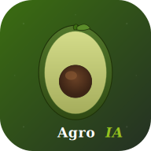

Información diferenciada según destinatario · Generado automáticamente al cierre del día
📧 Enviar reporte por email
El PDF se generará y enviará automáticamente.
—
⚠ Con el dominio de prueba de Resend, solo se puede enviar al correo registrado.
📷 Análisis IA Visual
Toma una foto y el agente IA analizará calidad, daños y madurez
🧠 Analizando...
El agente IA está procesando la imagen
📋 Resultado del análisis
🌱 Sostenibilidad e Impacto ESG
Valle de Virú, La Libertad · Métricas calculadas en vivo
CALIFICACIÓN ESG GLOBAL
Excelente desempeño
AgroIA combina IA, validación estadística y digitalización completa para generar un impacto positivo medible en las tres dimensiones del estándar ESG internacional.
🌿 Environmental
👥 Social
🛡 Governance
📊 Impacto del año en curso
💧
↓ 37%
Huella hídrica
--
por kg cosechado
37% menos que el promedio mundial FAO de 1,981 L/kg
🌫
↓ 96%
CO₂ evitado
--
acumulado
Equivalente a no recorrer kilómetros en auto
📋
↓ 100%
Papel ahorrado
--
hojas A4 evitadas
Equivalente a salvar parte de un árbol adulto
🚗
↓ 90%
Km no recorridos
--
verificación remota
Verificación in situ reemplazada por visión IA
🎯 Desglose por dimensión ESG
🌿 Environmental
--
✓ Digitalización 100% del proceso
✓ Trazabilidad de cada pesada
✓ Riego optimizado (goteo) ✓ Reducción de merma: --
Extraída de ríos/acuíferos. Riego por goteo optimizado en tus lotes.
💚
AGUA VERDE
Lluvia natural
300 L/kg
Agua de lluvia absorbida por el suelo. No requiere extracción.
AGUA GRIS
Impacto ambiental
100 L/kg
Agua teórica para diluir fertilizantes/pesticidas a niveles seguros.
Total por kg de palta cosechada
1,250 L/kg
↓ 37% más eficiente
📊 Comparativa con la industria
🌱 AgroIA (tú)1,250 L/kg
🏭 Promedio industria peruana1,650 L/kg
🇵🇪 Promedio agricultura Perú1,800 L/kg
🌍 Promedio mundial FAO1,981 L/kg
🎯
Recomendaciones automáticas del agente IA
1.
Implementar sensores IoT de humedad de suelo
Reduciría el agua azul hasta 15% adicional al regar solo cuando es necesario. Inversión: ~$200 USD/lote.
2.
Riego nocturno o al amanecer
Reduce evaporación hasta 20%. Sin inversión adicional, solo cambio de horario de riego.
3.
Cobertura vegetal entre hileras
Mantiene humedad del suelo, reduce evaporación y aporta materia orgánica. Recomendado: trébol o avena forrajera.
4.
Reciclaje de agua de lavado de palta
Tratamiento básico (filtros + sedimentación) permite reutilizar agua para riego. Reducción agua azul: 8-12%.
🛰️ Monitoreo Satelital del Valle de Virú
📍 Valle de Virú, La Libertad
Coordenadas: -8.4078°, -78.7547° · Zona Camposol S.A. · Resolución 10m/pixel
🟢 Sentinel-2 (ESA Copernicus)
📍 Valle de Virú · Zona de cultivo
🛰️
¿Por qué Sentinel-2?
Es el satélite de la Agencia Espacial Europea (ESA) que pasa sobre Virú cada 3-5 días tomando fotos de alta resolución.
Permite ver el estado real de los cultivos sin tener que visitar cada lote físicamente.
📊 Análisis satelitales disponibles
🎨
Color Real
Vista natural del campo. Verde = cultivo, marrón = suelo, azul = agua.
🌿
NDVI (Vegetación)
Salud de los cultivos. Verde oscuro = saludable, rojo = problemas.
💧
Humedad
Agua en el suelo. Útil para verificar eficiencia del riego.
🔴
Infrarrojo
Detecta estrés vegetal antes de que sea visible al ojo humano.
⚠️ Se abre en una nueva pestaña con todas las herramientas de análisis profesional
🛰️ Satélite
Sentinel-2 L2A
📅 Revisita
Cada 3-5 días
🔍 Resolución
10 metros/pixel
🌿 NDVI estimado
0.65 - Saludable
📖
¿Cómo interpretar las imágenes satelitales?
Guía visual de NDVI y otros índices
▼
🎨 Color Real
La vista que tendrías desde el espacio. Útil para identificar lotes, infraestructura y patrones de cultivo. Las áreas verdes son vegetación; marrones son suelo expuesto.
🌿 NDVI
Índice de Vegetación. Mide la "salud" del cultivo: Rojo: suelo desnudo o vegetación enferma Amarillo: vegetación moderada Verde: vegetación saludable y densa
💧 Humedad
Detecta cuerpos de agua y suelos con alta humedad. Útil para identificar zonas de riego activo o problemas de drenaje.
🔴 Infrarrojo
Vegetación se muestra en rojo intenso. Permite detectar estrés hídrico, plagas o enfermedades antes de que sean visibles a simple vista.
Nota técnica: Las imágenes son del satélite Sentinel-2 de la Agencia Espacial Europea (ESA), parte del programa Copernicus. Son de uso público y libre. La zona mostrada corresponde al Valle de Virú, donde se encuentran las plantaciones de Camposol S.A. y otras agroexportadoras peruanas. Datos verificables en copernicus.eu.
📚
¿Cómo se calculan estas métricas?
Metodología científica y fuentes
▼
💧 Huella hídrica
Promedio mundial palta Hass: 1,981 L/kg (Mekonnen & Hoekstra, 2010).
Riego por goteo Valle Virú: 1,250 L/kg (37% más eficiente).
🌫 CO₂ equivalente
Hoja de papel A4: 0.0046 kg CO₂ (EPA 2024).
Auto en carretera: 0.21 kg CO₂/km (MINAM Perú).
Fórmula: hojas evitadas + km evitados.
📋 Papel ahorrado
Sin sistema: 1 hoja por pesada (registro manual).
Con AgroIA: 0 hojas (todo digital).
🚗 Viajes evitados
Verificación in situ tradicional: 0.5 km por pesada (ida y vuelta).
Con visión IA: 0 km (todo remoto).
Nota metodológica: Los cálculos se basan en datos reales de pesadas registradas en el sistema. La calificación ESG global es un promedio ponderado: E (40%) + S (35%) + G (25%), según ponderación del Global Reporting Initiative (GRI). Esta evaluación interna no sustituye una auditoría ESG formal de un tercero acreditado.
🔮 Predicciones del Agente IA
Análisis predictivo basado en datos históricos de cosecha
🤖
Agente IA con Aprendizaje Adaptativo
Sistema que aprende los patrones de productividad de cada día de la semana
directamente de las pesadas históricas. Combina aprendizaje supervisado básico con análisis estadístico (z-score). Russell & Norvig (2021).
📚 Modelo en construcción...
Confianza
--
📭
Aún no hay suficientes datos
Se necesitan al menos 5 pesadas registradas para generar predicciones confiables.
📈 Producción proyectada
Próximos 7 días basado en tendencia actual
Total proyectado
0 kg
Promedio diario
-- kg
Tendencia
--
Mejor día
--
⚠️ Trabajadores que necesitan refuerzo
Identificados por análisis de productividad histórica
Detectados
0
💡 Recomendaciones del Agente
🏁 Estimación de fin de campaña
Progreso de la campaña0%
Total cosechado
0 kg
Meta de campaña
12,000 kg
Ritmo actual
-- kg/día
Días restantes
--
📅 Fecha estimada de fin de campaña
--
--
📐 Metodología: El agente IA implementa aprendizaje supervisado básico: agrupa las pesadas históricas por día de la semana y calcula los factores de productividad reales de cada día. Si no hay datos suficientes de algún día, usa valores por defecto basados en patrones agrícolas tradicionales. La confianza del modelo crece a medida que se registran más pesadas y se cubren más días de la semana. Cumple el modelo de agente IA deliberativo con aprendizaje (Russell & Norvig, 2021).
🛠 Panel de Control de Cliente
Adaptación del agente IA según nivel tecnológico de la empresa cliente
🎯
Adaptación según mercado destino
AgroIA se adapta al nivel de adopción tecnológica de cada empresa de la agroindustria. Una empresa que aún usa Excel necesita una solución diferente que una con tablets en campo. Este panel permite cambiar la vista del cliente para que veas exactamente lo que verá según su nivel contratado.
Nivel actualmente activo
📊 Cambiar nivel tecnológico
📊
✓ ACTIVO
Nivel 1 — Manual
Empresa que registra todo en Excel/papel. AgroIA importa, valida y exporta.
✓ Dashboard básico
✓ Importar/Exportar Excel
✓ Validación estadística
— Sin IA en cámara
— Sin predicciones
💻
✓ ACTIVO
Nivel 2 — Híbrido
Empresa con supervisores usando tablets/laptops en campo. App web simplificada.
✓ Todo Nivel 1 +
✓ Notificaciones email
✓ Monitoreo satelital
✓ Cámara IA con Gemini
— Sin predicciones IA
🚀
✓ ACTIVO
Nivel 3 — Completo
Empresa con full digitalización: IA, predicciones, satelital, integraciones B2B.
✓ Todo Nivel 2 +
✓ Cámara IA con Gemini
✓ Predicciones IA
✓ Estado del Sistema
✓ Integración B2B
💡
Para tu presentación: Inicia sesión como admin en una pestaña de incógnito y verás la vista del cliente según el nivel seleccionado. Tu sesión actual (DEMO) siempre ve todo.
🔑 Cuentas demo para presentación
Crea estas cuentas en Supabase para que el profesor pueda probar cada vista cliente:
📊 Cliente Nivel 1: admin1@agroia.local / cliente2026
💻 Cliente Nivel 2: admin2@agroia.local / cliente2026
🚀 Cliente Nivel 3: admin3@agroia.local / cliente2026
📊 Plan de Negocio AgroIA
Análisis de mercado, plan de adaptación y simulaciones por nivel tecnológico
El mercado peruano de palta Hass
US$ 1,250M
En exportaciones · 2024 (+25% vs 2023)
¿Quién compone este mercado?
👨🌾
28,000
productores de palta Hass en Perú
55,595 ha
Hectáreas certificadas
Fuente: SENASA · MIDAGRI 2024
El embudo del mercado — 3 segmentos claros
71%
🌾 Pequeños productores
19,880 productores · Cooperativas, fundos <10 ha · Excel/papel
→ Nivel 1
23%
💻 Empresas medianas
6,440 productores · 10-100 ha · Tablets, WiFi parcial
→ Nivel 2
6%
🚀 Grandes agroindustriales
1,680 productores · +100 ha · ERP, IoT
→ Nivel 3
Conclusión
AgroIA es el único producto del mercado adaptado a los 3 segmentos.
Si captamos solo 1% del mercado total → 280 clientes = S/ 2.5M/año
Reducción de fraude estimada:
• Nivel 1: 2% · Nivel 2: 4% · Nivel 3: 6% Si la reducción real difiere ±1%, el ROI varía proporcionalmente.
🔴 Simulador B2B: Empresa Externa
Una empresa externa se conecta a AgroIA y envía pesadas en tiempo real
⚡
Integración B2B en tiempo real
Esta sección simula una empresa externa conectándose a AgroIA por API y enviando pesadas continuamente.
Sirve para detectar problemas operativos, analizar tendencias, y generar el diagrama de Ishikawa.
⚙ Configuración de la simulación
Detenido
📊 Métricas en vivo
Total generadas
0
pesadas
Anomalías
0
detectadas
Jornada excesiva
0
>12h Ley 31110
Tasa anomalía
0%
de total
📝 Log en vivo (últimas 20 pesadas)
El simulador no está activo. Inicia la simulación para ver pesadas en tiempo real.
🔧 Cómo funciona técnicamente
Arquitectura del simulador B2B:
1. Trigger inicial: POST /api/simulador/iniciar con config
2. Worker en backend: thread separado en Python que genera 1 pesada cada N segundos
3. Generación de datos: usa trabajadores y lotes reales de la empresa
4. Distribución estadística: z-score real, ~15% son anomalías
5. Persistencia: cada pesada se guarda en Supabase con empresa_id
6. Polling frontend: consulta /api/simulador/estado cada 2 segundos
7. UI live: dashboard se actualiza sin recargar página
Esto demuestra integración B2B real, no simulada en frontend.
📊 Análisis de Calidad
Diagnóstico Ishikawa, hallazgos y plan de mejora basado en datos del simulador
💡
Este análisis se basa en las pesadas simuladas de la empresa activa.
Mientras más datos genera el simulador B2B, más preciso es el análisis Ishikawa.
Diagrama Ishikawa - 6M
⏳ Cargando análisis...
📈 Tendencia y top problemas
⏳ Cargando tendencia...
🔍 Hallazgos detallados por proceso
⏳ Cargando hallazgos...
🎯 Plan de mejora editable
⏳ Cargando plan...
⚙ Configuración del Sistema
Parámetros operativos y umbrales del agente IA
🔐
Solo administradores
Esta sección permite ajustar los parámetros del agente IA y la operativa del sistema.
Los cambios se guardan localmente y se aplican inmediatamente a las próximas validaciones.
📊 Umbrales de validación estadística
Los umbrales z-score determinan cuándo una pesada es validada, observada, alertada o bloqueada
⚠️ Observación (amarillo)
Pesada marcada para revisión
|z| >
🟠 Alerta (naranja)
Supervisor notificado automáticamente
|z| >
🔴 Bloqueo (rojo)
Pesada bloqueada, requiere validación manual
|z| >
💡 ¿Qué es z-score? Es el número de desviaciones estándar entre la productividad real del trabajador y su promedio histórico. Por ejemplo, z=3 significa que la pesada está 3σ por encima/debajo de lo normal (probabilidad <0.3%).
🎯 Meta de campaña
Objetivos productivos del Valle de Virú
kg
ha
personas
🚦 Seguridad y rate limiting
Protección contra abuso. Estos valores se cambian en variables de entorno del servidor.
⚡ Peticiones/min por IP
60
Configurado en server.py
📧 Anti-spam emails
7/hora
Por supervisor
💾 Caché Health Check
5 min
Protege APIs gratuitas
🔐 Cifrado
TLS 1.3
+ bcrypt passwords
📧 Destinatarios de emails automáticos
Configurados en variables de entorno de Render (por seguridad no se muestran completos)
📊 Gerencia✓ CONFIGURADO
🌾 Jefe de Campo✓ CONFIGURADO
👥 Supervisor C3✓ CONFIGURADO
👥 Supervisor C5✓ CONFIGURADO
👥 Supervisor C7✓ CONFIGURADO
💼 Recursos Humanos✓ CONFIGURADO
🩺 Estado del Sistema
Monitoreo en vivo de todos los servicios externos
⏳
ESTADO GLOBAL DEL SISTEMA
Verificando servicios...
Aguarda mientras consultamos cada servicio
Última verificación
--
✅ Operativos
--
🟡 Lentos
--
🔴 Con error
--
⚡ Latencia promedio
-- ms
📊 Detalle por servicio
⏳ Cargando estado de los servicios...
💡
¿Cómo funciona?
Este panel consulta en tiempo real el estado de cada servicio externo del que depende AgroIA:
base de datos (Supabase), visión por IA (Google Gemini), email (Resend), datos meteorológicos
(Open-Meteo) y monitoreo (Datadog). La verificación se hace automáticamente cada 60 segundos
o cuando presionas "Probar ahora". Cumple parte de ISO 27001 A.12 (Operations Security).
Log de decisiones del agente
Auditoría completa de validaciones, alertas y acciones
🥑
AgroIA
Valle de Virú
👋 Hola,
--
📍 Cuadrilla --
⚖ Registrar mi pesada
¿Cuántos kilos cosechaste?
Ejemplo: 42
¿Cuántas horas trabajaste?
¿Está todo correcto?
Kilos:0 kg
Horas:0 hrs
Cuadrilla:--
🎉
¡Pesada registrada!
Tu trabajo quedó guardado en el sistema.
RESUMEN
-- kg
--
📊 Mis pesadas de hoy
--
📸 Analizar mi cosecha
Toma una foto de tus paltas y la IA las revisará
📷
Apunta tu cámara a la cosecha
La IA analizará automáticamente las paltas para ver si están bien.
⏳
Analizando con IA...
Esto puede tardar 10-30 segundos
😔
No se pudo analizar
Intenta de nuevo en unos segundos
🆘 Reportar un problema
Tu reporte ayuda a mejorar AgroIA
Información que se enviará
Paso 1 de 9
--
--
Registrar nueva pesada
El agente validará automáticamente el registro
Cuadrilla asignada
Lote habitual
Histórico

Instalar AgroIA
Acceso rápido desde tu pantalla de inicio
Instalar AgroIA en tu iPhone
Toca el botón Compartir ⬆ abajo,
luego "Agregar a pantalla de inicio"